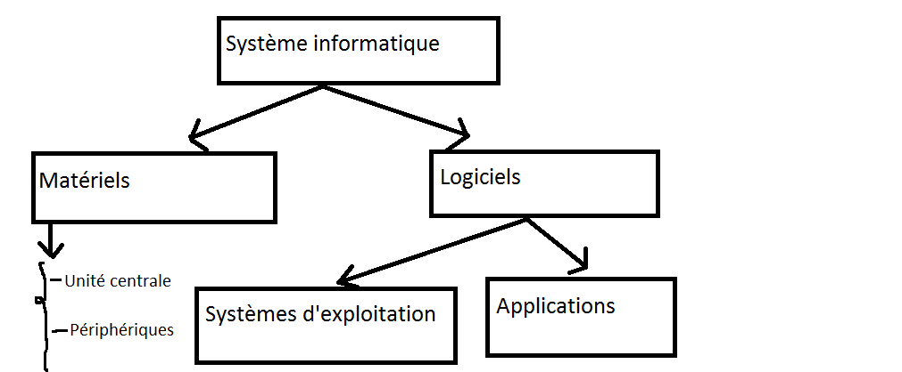

on distingue trois types de traitements différents :
L’informatique est la science de traitement automatique de l’information.
nformatique = Information + Automatique
Un traitement automatique est un traitement réalisé par une machine appelée Ordinateur .
Un ordinateur est constitué d’une unité centrale et de périphériques.
C’est la partie principale de l’ordinateur qui effectue les traitements de base. Elle est constituée d’un processeur et d’une mémoire centrale.
| Organe | Fonction |
| Ecran(Moniteur) | L’affichage des informations |
| Clavier | Sert à saisir des textes, des chiffres ou des commandes |
| Souris | Pour manipuler les objets dans une interface graphique |
| Imprimante | Pour imprimer les informations sur papiers |
| Haut-parleur | Permettent d’écouter le son |
| Scanner (digitaliseur) | Sert à numériser les documents (textes, images) |
| Disque dur | Un élément indispensable de l'ordinateur pour installer des logiciels et sauvegarder des documents |
| Caméra | Pour capturer la vidéo |
| Clé USB | Mémoire de stockage, modem pour se connecter à Internet, adaptateur sans fil de réseau… |
| Microphone | Pour ebregistrer le son |
les périphériques se catégorisent en trois types par rapport à l’unité centrale selon leur rôle :
Périphérique d’entrée (PE) : Envoient les informations à l’unité centrale ;
Périphériques de sortie (PS) : Reçoivent les informations de l’unité centrale ;
Périphériques d’entrée/sortie (P.E/S) :Envoient et reçoivent les informations à et de l’unité centrale
| Périphérique d'entée | Périphérique de sortie | périphérique d'entée/sortie |
| Clavier | Clavier | Disque dur |
| Souris | Imprimante | GraveurCD/DVD |
| Scanner | Haut-parleur | Clé-USB |
| Microphone | ... | ... |
| Caméra | ... | ... |

Remarque : les ordinateurs modernes intègrent des claviers tactiles
Souvent les périphériques externes d’un ordinateur se connectent à l’ unité centrale grâce à des connecteurs spéciaux : • chaque connecteur se branche d’une façon unique à l’unité centrale via un port ; • Pour connecter correctement un connecteur au port correspondant il faut : i- Respecter la symétrie à la fois du port et du connecteur ; ii- Eviter les connectivités forcées.
| Support | Capacité |
| CD-ROM | 700 |
| DVD-ROM | 4.7GO |
| Disque dur | 320GO,1TO... |
| Carte mémoire | 4GO,8GO... |
- Pour mesurer l’information, on utilise une unité qui s’appelle Octet.
1Octet = 8 bits
Les unités multiples de l'octet sont:1 KO = 1024 Octets ; 1 MO = 1024 KO ; 1 GO = 1024 MO ; 1 TO = 1024 GO; …
2 octets = 16 bits; 64 bits= 8 octets; 2 GO = 2048 MO.
pour exploiter un ordinateur, Le matériel à lui seul ne suffit pas. Il lui faut des logiciels.
Un logiciel est un ensemble de programmes qui permettent d’exploiter les ressources matérielles de l’ordinateur.
On distingue deux catégories de logiciels :
les systèmes d’exploitation(OS) : indispensable au fonctionnement de l’ordinateur ;
Les applications : répondent aux besoins spécifiques de l’utilisateur.
| Système d'éxploitation | Application |
| • Windows 7 • Ubuntu (GNU /linux) • Debian (GNU/linux) • Androïd • QNX • Mac os 10 • … |
• texteurs • tableurs • jeux • Antivirus • Encyclopédies • Navigateurs internet • Traiteurs d’image • Traiteurs de son • ... |
Un système informatique est constitué de matériels (Hardware) et de logiciels (software).
